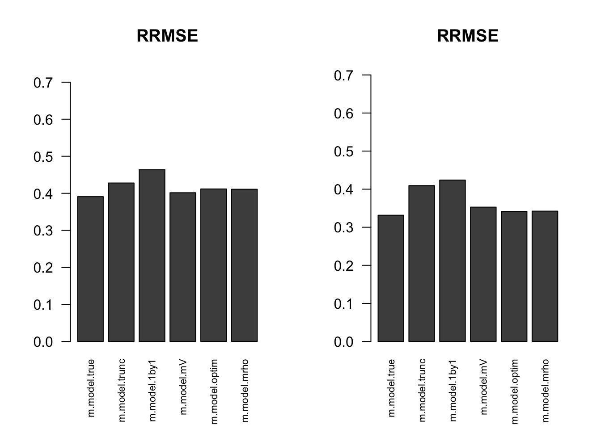

Estimate cor—max MASH
Yuxin Zou
2018-07-25
Last updated: 2018-10-09
workflowr checks: (Click a bullet for more information)-
✔ R Markdown file: up-to-date
Great! Since the R Markdown file has been committed to the Git repository, you know the exact version of the code that produced these results.
-
✔ Environment: empty
Great job! The global environment was empty. Objects defined in the global environment can affect the analysis in your R Markdown file in unknown ways. For reproduciblity it’s best to always run the code in an empty environment.
-
✔ Seed:
set.seed(1)The command
set.seed(1)was run prior to running the code in the R Markdown file. Setting a seed ensures that any results that rely on randomness, e.g. subsampling or permutations, are reproducible. -
✔ Session information: recorded
Great job! Recording the operating system, R version, and package versions is critical for reproducibility.
-
Great! You are using Git for version control. Tracking code development and connecting the code version to the results is critical for reproducibility. The version displayed above was the version of the Git repository at the time these results were generated.✔ Repository version: 6a7b52b
Note that you need to be careful to ensure that all relevant files for the analysis have been committed to Git prior to generating the results (you can usewflow_publishorwflow_git_commit). workflowr only checks the R Markdown file, but you know if there are other scripts or data files that it depends on. Below is the status of the Git repository when the results were generated:
Note that any generated files, e.g. HTML, png, CSS, etc., are not included in this status report because it is ok for generated content to have uncommitted changes.Ignored files: Ignored: .DS_Store Ignored: .Rhistory Ignored: .Rproj.user/ Ignored: analysis/.DS_Store Ignored: analysis/.Rhistory Ignored: analysis/figure/ Ignored: analysis/include/.DS_Store Ignored: code/.DS_Store Ignored: data/.DS_Store Ignored: docs/.DS_Store Ignored: output/.DS_Store Untracked files: Untracked: analysis/Classify.Rmd Untracked: analysis/EstimateCorEM3W2.Rmd Untracked: analysis/EstimateCorMaxEMGD.Rmd Untracked: analysis/EstimateCorMaxGD.Rmd Untracked: analysis/EstimateCorPrior.Rmd Untracked: analysis/EstimateCorSol.Rmd Untracked: analysis/HierarchicalFlashSim.Rmd Untracked: analysis/MashLowSignalGTEx4.Rmd Untracked: analysis/Mash_GTEx.Rmd Untracked: analysis/MeanAsh.Rmd Untracked: analysis/OutlierDetection.Rmd Untracked: analysis/OutlierDetection2.Rmd Untracked: analysis/OutlierDetection3.Rmd Untracked: analysis/OutlierDetection4.Rmd Untracked: analysis/mash_missing_row.Rmd Untracked: code/GTExNullModel.R Untracked: code/MASH.result.1.rds Untracked: code/MashClassify.R Untracked: code/MashCorResult.R Untracked: code/MashNULLCorResult.R Untracked: code/MashSource.R Untracked: code/Weight_plot.R Untracked: code/addemV.R Untracked: code/estimate_cor.R Untracked: code/generateDataV.R Untracked: code/johnprocess.R Untracked: code/sim_mean_sig.R Untracked: code/summary.R Untracked: data/Blischak_et_al_2015/ Untracked: data/scale_data.rds Untracked: docs/figure/Classify.Rmd/ Untracked: docs/figure/OutlierDetection.Rmd/ Untracked: docs/figure/OutlierDetection2.Rmd/ Untracked: docs/figure/OutlierDetection3.Rmd/ Untracked: docs/figure/Test.Rmd/ Untracked: docs/figure/mash_missing_whole_row_5.Rmd/ Untracked: docs/include/ Untracked: output/AddEMV/ Untracked: output/CovED_UKBio_strong.rds Untracked: output/CovED_UKBio_strong_Z.rds Untracked: output/Flash_UKBio_strong.rds Untracked: output/GTExNULLres/ Untracked: output/GTEx_2.5_nullData.rds Untracked: output/GTEx_2.5_nullModel.rds Untracked: output/GTEx_2.5_nullPermData.rds Untracked: output/GTEx_2.5_nullPermModel.rds Untracked: output/GTEx_3.5_nullData.rds Untracked: output/GTEx_3.5_nullModel.rds Untracked: output/GTEx_3.5_nullPermData.rds Untracked: output/GTEx_3.5_nullPermModel.rds Untracked: output/GTEx_3_nullData.rds Untracked: output/GTEx_3_nullModel.rds Untracked: output/GTEx_3_nullPermData.rds Untracked: output/GTEx_3_nullPermModel.rds Untracked: output/GTEx_4.5_nullData.rds Untracked: output/GTEx_4.5_nullModel.rds Untracked: output/GTEx_4.5_nullPermData.rds Untracked: output/GTEx_4.5_nullPermModel.rds Untracked: output/GTEx_4_nullData.rds Untracked: output/GTEx_4_nullModel.rds Untracked: output/GTEx_4_nullPermData.rds Untracked: output/GTEx_4_nullPermModel.rds Untracked: output/MASH.10.em2.result.rds Untracked: output/MASH.10.mle.result.rds Untracked: output/MASHNULL.V.result.1.rds Untracked: output/MASHNULL.V.result.10.rds Untracked: output/MASHNULL.V.result.11.rds Untracked: output/MASHNULL.V.result.12.rds Untracked: output/MASHNULL.V.result.13.rds Untracked: output/MASHNULL.V.result.14.rds Untracked: output/MASHNULL.V.result.15.rds Untracked: output/MASHNULL.V.result.16.rds Untracked: output/MASHNULL.V.result.17.rds Untracked: output/MASHNULL.V.result.18.rds Untracked: output/MASHNULL.V.result.19.rds Untracked: output/MASHNULL.V.result.2.rds Untracked: output/MASHNULL.V.result.20.rds Untracked: output/MASHNULL.V.result.3.rds Untracked: output/MASHNULL.V.result.4.rds Untracked: output/MASHNULL.V.result.5.rds Untracked: output/MASHNULL.V.result.6.rds Untracked: output/MASHNULL.V.result.7.rds Untracked: output/MASHNULL.V.result.8.rds Untracked: output/MASHNULL.V.result.9.rds Untracked: output/MashCorSim--midway/ Untracked: output/Mash_EE_Cov_0_plusR1.rds Untracked: output/UKBio_mash_model.rds Untracked: output/result.em.rds Unstaged changes: Modified: analysis/EstimateCorMaxEM2.Rmd Modified: analysis/Mash_UKBio.Rmd Modified: analysis/mash_missing_samplesize.Rmd Modified: output/Flash_T2_0.rds Modified: output/Flash_T2_0_mclust.rds Modified: output/Mash_model_0_plusR1.rds Modified: output/PresiAddVarCol.rds
Expand here to see past versions:
| File | Version | Author | Date | Message |
|---|---|---|---|---|
| Rmd | 6a7b52b | zouyuxin | 2018-10-09 | wflow_publish(“analysis/EstimateCorMaxMash.Rmd”) |
| html | 43f718f | zouyuxin | 2018-10-09 | Build site. |
| Rmd | 293f39b | zouyuxin | 2018-10-09 | wflow_publish(“analysis/EstimateCorMaxMash.Rmd”) |
| html | 78b075a | zouyuxin | 2018-08-20 | Build site. |
| Rmd | 88274cc | zouyuxin | 2018-08-20 | wflow_publish(“analysis/EstimateCorMaxMash.Rmd”) |
| html | cb0eb4d | zouyuxin | 2018-08-16 | Build site. |
| Rmd | 6357604 | zouyuxin | 2018-08-16 | wflow_publish(c(“analysis/EstimateCorIndex.Rmd”, “analysis/EstimateCorMaxMash.Rmd”)) |
| html | 6281062 | zouyuxin | 2018-08-15 | Build site. |
| Rmd | 3e3e128 | zouyuxin | 2018-08-15 | wflow_publish(c(“analysis/EstimateCor.Rmd”, “analysis/EstimateCorMax.Rmd”, |
| html | 055978d | zouyuxin | 2018-08-15 | Build site. |
| Rmd | 40dc525 | zouyuxin | 2018-08-15 | wflow_publish(“analysis/EstimateCorMaxMash.Rmd”) |
| html | 96ec142 | zouyuxin | 2018-08-15 | Build site. |
| Rmd | 56743af | zouyuxin | 2018-08-15 | wflow_publish(“analysis/EstimateCorMaxMash.Rmd”) |
| html | 802266a | zouyuxin | 2018-08-15 | Build site. |
| Rmd | c7b3665 | zouyuxin | 2018-08-15 | wflow_publish(“analysis/EstimateCorMaxMash.Rmd”) |
| html | b9e760f | zouyuxin | 2018-08-03 | Build site. |
| Rmd | 1e6ff48 | zouyuxin | 2018-08-03 | wflow_publish(c(“analysis/EstimateCorMaxMash.Rmd”)) |
library(mashr)Loading required package: ashrsource('../code/generateDataV.R')
source('../code/estimate_cor.R')
source('../code/summary.R')
library(knitr)
library(kableExtra)
library(ggplot2)
library(reshape2)Apply the max likelihood methods for correlation matrix on mash data.
After we estimate each pairwise correlation, the final resulting \(p\times p\) correlation matrix may not be positive definite. I estimate the nearest PD cor matrix with nearPD function. In the simulations, there is no non pd resulting matrix.
The estimated V from optim(optim function), \(M_{\rho}\) and \(MV\) perform better than the truncated correlation (error, mash log likelihood, ROC).
Comparing the estimated V from optim, \(M_{\rho}\) and \(MV\), \(MV\) algorithm is the fastest one, followed by \(M_{\rho}\). The estimated V from optim and \(M_{\rho}\) are very similar. They have smaller error to the true V than \(MV\), most of the time. The estimated V from \(MV\) has larger log likelihood in the final mash model. In terms of ROC and RRMSE, the estimated V from optim, \(M_{\rho}\) and \(MV\) performs similarly.
Based on the simulation results, I prefer the \(MV\) method.
One example: p = 3
\[ \hat{\beta}|\beta \sim N_{3}(\hat{\beta}; \beta, \left(\begin{matrix} 1 & 0.7 & 0.2 \\ 0.7 & 1 & 0.4 \\ 0.2 & 0.4 & 1 \end{matrix}\right)) \]
\[ \beta \sim \frac{1}{4}\delta_{0} + \frac{1}{4}N_{3}(0, \left(\begin{matrix} 1 & 0 &0\\ 0 & 0 & 0 \\ 0 & 0 & 0 \end{matrix}\right)) + \frac{1}{4}N_{3}(0, \left(\begin{matrix} 1 & 0 & 0 \\ 0 & 1 & 0 \\ 0 & 0 & 0 \end{matrix}\right)) + \frac{1}{4}N_{3}(0, \left(\begin{matrix} 1 & 1 & 1 \\ 1 & 1 & 1 \\ 1 & 1 & 1 \end{matrix}\right)) \]
set.seed(1)
Sigma = cbind(c(1,0.7,0.2), c(0.7,1,0.4), c(0.2,0.4,1))
U0 = matrix(0,3,3)
U1 = matrix(0,3,3); U1[1,1] = 1
U2 = diag(3); U2[3,3] = 0
U3 = matrix(1,3,3)
data = generate_data(n=4000, p=3, V=Sigma, Utrue = list(U0=U0, U1=U1,U2=U2,U3=U3))We find the estimate of V with canonical covariances and the PCA covariances.
m.data = mash_set_data(data$Bhat, data$Shat)
m.1by1 = mash_1by1(m.data)
strong = get_significant_results(m.1by1)
U.pca = cov_pca(m.data, 3, subset = strong)
U.ed = cov_ed(m.data, U.pca, subset = strong)
U.c = cov_canonical(m.data)The PCA correlation matrices are: 
Expand here to see past versions of unnamed-chunk-3-1.png:
| Version | Author | Date |
|---|---|---|
| 78b075a | zouyuxin | 2018-08-20 |
- We run the algorithm in estimate cor optim with 3 different initial points for \(\rho\), (-0.5,0,0.5). The \(\rho\) in each iteration is estimated using
optimfunction. The estimated correlation is
Vhat.optim = estimateV(m.data, c(U.c, U.ed), init_rho = c(-0.5,0,0.5), tol=1e-4, optmethod = 'optim')
Vhat.optim$V [,1] [,2] [,3]
[1,] 1.0000000 0.7004633 0.1571929
[2,] 0.7004633 1.0000000 0.4174847
[3,] 0.1571929 0.4174847 1.0000000- The result uses algorithm in estimate cor mrho. \(\rho\) in each iteration is the root of a third degree polynomial.
Vhat.mrho = estimateV(m.data, c(U.c, U.ed), init_rho = c(-0.5,0,0.5), tol = 1e-4, optmethod = 'mrho')
Vhat.mrho$V [,1] [,2] [,3]
[1,] 1.0000000 0.6997223 0.1568695
[2,] 0.6997223 1.0000000 0.4171466
[3,] 0.1568695 0.4171466 1.0000000The running time (in sec.) for each pairwise correlation is
table = data.frame(rbind(Vhat.optim$ttime, Vhat.mrho$ttime), row.names = c('optim', 'mrho'))
colnames(table) = c('12','13','23')
table %>% kable() %>% kable_styling()| 12 | 13 | 23 | |
|---|---|---|---|
| optim | 239.918 | 247.438 | 280.396 |
| mrho | 311.792 | 169.985 | 157.315 |
The time is the total running time with different initial point.
- The result uses algorithm in estimate cor mV.
Vhat.mV = estimateV(m.data, c(U.c, U.ed), init_V = list(diag(ncol(m.data$Bhat)), clusterGeneration::rcorrmatrix(3), clusterGeneration::rcorrmatrix(3)), tol = 1e-4, optmethod = 'mV')
Vhat.mV$V [,1] [,2] [,3]
[1,] 1.0000000 0.6714335 0.1961885
[2,] 0.6714335 1.0000000 0.3782850
[3,] 0.1961885 0.3782850 1.0000000- Using the original truncated correlation:
Vhat.tru = estimate_null_correlation(m.data)
Vhat.tru [,1] [,2] [,3]
[1,] 1.0000000 0.4296283 0.1222433
[2,] 0.4296283 1.0000000 0.3324459
[3,] 0.1222433 0.3324459 1.0000000The truncated correlation underestimates the correlations.
- mash 1by1: Run ash for each condition, and estimate correlation matrix based on the non-significant samples.
V.mash = cor((data$Bhat/data$Shat)[-strong,])
V.mash [,1] [,2] [,3]
[1,] 1.0000000 0.5313446 0.2445663
[2,] 0.5313446 1.0000000 0.4490049
[3,] 0.2445663 0.4490049 1.0000000All the estimated correlation matrices above are positive definite.
Error
Check the estimation error:
FError = c(norm(Vhat.optim$V - Sigma, 'F'),
norm(Vhat.mrho$V - Sigma, 'F'),
norm(Vhat.mV$V - Sigma, 'F'),
norm(Vhat.tru - Sigma, 'F'),
norm(V.mash - Sigma, 'F'))
OpError = c(norm(Vhat.optim$V - Sigma, '2'),
norm(Vhat.mrho$V - Sigma, '2'),
norm(Vhat.mV$V - Sigma, '2'),
norm(Vhat.tru - Sigma, '2'),
norm(V.mash - Sigma, '2'))
table = data.frame(FrobeniusError = FError, SpectralError = OpError, row.names = c('optim','mrho','mV','trunc','m.1by1'))
table %>% kable() %>% kable_styling()| FrobeniusError | SpectralError | |
|---|---|---|
| optim | 0.0653970 | 0.0464039 |
| mrho | 0.0656403 | 0.0465097 |
| mV | 0.0510317 | 0.0377794 |
| trunc | 0.4091712 | 0.3049974 |
| m.1by1 | 0.2562509 | 0.1915171 |
mash log likelihood
In mash model, the model with correlation from optim has larger loglikelihood.
m.data.optim = mash_set_data(data$Bhat, data$Shat, V=Vhat.optim$V)
m.model.optim = mash(m.data.optim, c(U.c,U.ed), verbose = FALSE)m.data.mrho = mash_set_data(data$Bhat, data$Shat, V=Vhat.mrho$V)
m.model.mrho = mash(m.data.mrho, c(U.c,U.ed), verbose = FALSE)m.data.mV = mash_set_data(data$Bhat, data$Shat, V=Vhat.mV$V)
m.model.mV = mash(m.data.mV, c(U.c,U.ed), verbose = FALSE)m.data.trunc = mash_set_data(data$Bhat, data$Shat, V=Vhat.tru)
m.model.trunc = mash(m.data.trunc, c(U.c,U.ed), verbose = FALSE)m.data.1by1 = mash_set_data(data$Bhat, data$Shat, V=V.mash)
m.model.1by1 = mash(m.data.1by1, c(U.c,U.ed), verbose = FALSE)m.data.correct = mash_set_data(data$Bhat, data$Shat, V=Sigma)
m.model.correct = mash(m.data.correct, c(U.c,U.ed), verbose = FALSE)The results are summarized in table:
null.ind = which(apply(data$B,1,sum) == 0)
V.trun = c(get_loglik(m.model.trunc), length(get_significant_results(m.model.trunc)), sum(get_significant_results(m.model.trunc) %in% null.ind))
V.optim = c(get_loglik(m.model.optim), length(get_significant_results(m.model.optim)), sum(get_significant_results(m.model.optim) %in% null.ind))
V.mrho = c(get_loglik(m.model.mrho), length(get_significant_results(m.model.mrho)), sum(get_significant_results(m.model.mrho) %in% null.ind))
V.mV = c(get_loglik(m.model.mV), length(get_significant_results(m.model.mV)), sum(get_significant_results(m.model.mV) %in% null.ind))
V.1by1 = c(get_loglik(m.model.1by1), length(get_significant_results(m.model.1by1)), sum(get_significant_results(m.model.1by1) %in% null.ind))
V.correct = c(get_loglik(m.model.correct), length(get_significant_results(m.model.correct)), sum(get_significant_results(m.model.correct) %in% null.ind))
temp = cbind(V.optim, V.mrho, V.mV, V.trun, V.1by1, V.correct)
colnames(temp) = c('optim','Mrho','MV', 'Truncate', 'm.1by1', 'True')
row.names(temp) = c('log likelihood', '# significance', '# False positive')
temp %>% kable() %>% kable_styling()| optim | Mrho | MV | Truncate | m.1by1 | True | |
|---|---|---|---|---|---|---|
| log likelihood | -17920.2 | -17920.1 | -17912.63 | -17951.46 | -17943.49 | -17913.58 |
| # significance | 146.0 | 146.0 | 131.00 | 85.00 | 73.00 | 149.00 |
| # False positive | 1.0 | 1.0 | 0.00 | 1.00 | 0.00 | 1.00 |
ROC
m.optim.seq = ROC.table(data$B, m.model.optim)
m.mrho.seq = ROC.table(data$B, m.model.mrho)
m.mV.seq = ROC.table(data$B, m.model.mV)
m.trun.seq = ROC.table(data$B, m.model.trunc)
m.1by1.seq = ROC.table(data$B, m.model.1by1)
m.correct.seq = ROC.table(data$B, m.model.correct)
RRMSE
rrmse = rbind(RRMSE(data$B, data$Bhat, list(m.model.optim, m.model.mrho, m.model.mV, m.model.trunc, m.model.1by1, m.model.correct)))
colnames(rrmse) = c('optim','Mrho','MV', 'Truncate','m.1by1','True')
row.names(rrmse) = 'RRMSE'
rrmse %>% kable() %>% kable_styling()| optim | Mrho | MV | Truncate | m.1by1 | True | |
|---|---|---|---|---|---|---|
| RRMSE | 0.528246 | 0.5282098 | 0.5285035 | 0.5592648 | 0.5442074 | 0.5283068 |
barplot(rrmse, ylim=c(0,(1+max(rrmse))/2), names.arg = c('optim','Mrho', 'MV','Truncate','m.1by1','True'), las=2, cex.names = 0.7, main='RRMSE')More simulations: p = 5
I randomly generate 10 positive definite correlation matrices, V. The sample size is 4000.
\[ \hat{z}|z \sim N_{5}(z, V) \] \[ z\sim\frac{1}{4}\delta_{0} + \frac{1}{4}N_{5}(0,\left(\begin{matrix} 1 & \mathbf{0}_{1\times 4} \\ \mathbf{0}_{4\times 1} & \mathbf{0}_{4\times 4} \end{matrix}\right)) + \frac{1}{4}N_{5}(0,\left(\begin{matrix} \mathbf{1}_{2\times 2} & \mathbf{0}_{1\times 3} \\ \mathbf{0}_{3\times 1} & \mathbf{0}_{3\times 3} \end{matrix}\right)) + \frac{1}{4}N_{5}(0,\mathbf{1}_{5\times 5}) \]
set.seed(100)
n=4000; p = 5
U0 = matrix(0,p,p)
U1 = U0; U1[1,1] = 1
U2 = U0; U2[c(1:2), c(1:2)] = 1
U3 = matrix(1, p,p)
Utrue = list(U0 = U0, U1 = U1, U2 = U2, U3 = U3)
for(t in 1:20){
Vtrue = clusterGeneration::rcorrmatrix(p)
data = generate_data(n, p, Vtrue, Utrue)
# mash cov
m.data = mash_set_data(Bhat = data$Bhat, Shat = data$Shat)
m.1by1 = mash_1by1(m.data)
strong = get_significant_results(m.1by1)
U.pca = cov_pca(m.data, 3, subset = strong)
U.ed = cov_ed(m.data, U.pca, subset = strong)
U.c = cov_canonical(m.data)
Vhat.optim <- estimateV(m.data, c(U.c, U.ed), init_rho = c(-0.5,0,0.5), tol=1e-4, optmethod = 'optim')
Vhat.mrho <- estimateV(m.data, c(U.c, U.ed), init_rho = c(-0.5,0,0.5), tol=1e-4, optmethod = 'mrho')
Vhat.mV <- estimateV(m.data, c(U.c, U.ed), init_V = list(diag(ncol(m.data$Bhat)), clusterGeneration::rcorrmatrix(p), clusterGeneration::rcorrmatrix(p)),tol=1e-4, optmethod = 'mV')
saveRDS(list(V.true = Vtrue, V.optim = Vhat.optim, V.mrho = Vhat.mrho, V.mV = Vhat.mV, data = data, strong=strong),
paste0('../output/MASH.result.',t,'.rds'))
}files = dir("../output/AddEMV/"); files = files[grep("MASH.result",files)]
times = length(files)
result = vector(mode="list",length = times)
for(i in 1:times) {
result[[i]] = readRDS(paste("../output/AddEMV/", files[[i]], sep=""))
}optim.pd = numeric(times)
mrho.pd = numeric(times)
for(i in 1:times){
m.data = mash_set_data(result[[i]]$data$Bhat, result[[i]]$data$Shat)
result[[i]]$V.trun = estimate_null_correlation(m.data, apply_lower_bound = FALSE)
m.1by1 = mash_1by1(m.data)
strong = get_significant_results(m.1by1)
result[[i]]$V.1by1 = cor(m.data$Bhat[-strong,])
U.c = cov_canonical(m.data)
U.pca = cov_pca(m.data, 3, subset = strong)
U.ed = cov_ed(m.data, U.pca, subset = strong)
m.data.true = mash_set_data(Bhat = m.data$Bhat, Shat = m.data$Shat, V = result[[i]]$V.true)
m.model.true = mash(m.data.true, c(U.c,U.ed), verbose = FALSE)
m.data.trunc = mash_set_data(Bhat = m.data$Bhat, Shat = m.data$Shat, V = result[[i]]$V.trun)
m.model.trunc = mash(m.data.trunc, c(U.c,U.ed), verbose = FALSE)
m.data.1by1 = mash_set_data(Bhat = m.data$Bhat, Shat = m.data$Shat, V = result[[i]]$V.1by1)
m.model.1by1 = mash(m.data.1by1, c(U.c,U.ed), verbose = FALSE)
m.data.mV = mash_set_data(Bhat = m.data$Bhat, Shat = m.data$Shat, V = result[[i]]$V.mV$V)
m.model.mV = mash(m.data.mV, c(U.c,U.ed), verbose = FALSE)
# optim
m.model.optim = m.model.optim.F = m.model.optim.2 = list()
R <- tryCatch(chol(result[[i]]$V.optim$V),error = function (e) FALSE)
if(is.matrix(R)){
optim.pd[i] = 1
m.data.optim = mash_set_data(Bhat = m.data$Bhat, Shat = m.data$Shat, V = result[[i]]$V.optim$V)
m.model.optim = mash(m.data.optim, c(U.c,U.ed), verbose = FALSE)
}else{
V.optim.near.F = as.matrix(Matrix::nearPD(result[[i]]$V.optim$V, conv.norm.type = 'F', keepDiag = TRUE)$mat)
V.optim.near.2 = as.matrix(Matrix::nearPD(result[[i]]$V.optim$V, conv.norm.type = '2', keepDiag = TRUE)$mat)
result[[i]]$V.optim.F = V.optim.near.F
result[[i]]$V.optim.2 = V.optim.near.2
# mashmodel
m.data.optim.F = mash_set_data(Bhat = m.data$Bhat, Shat = m.data$Shat, V = V.optim.near.F)
m.model.optim.F = mash(m.data.optim.F, c(U.c,U.ed), verbose = FALSE)
m.data.optim.2 = mash_set_data(Bhat = m.data$Bhat, Shat = m.data$Shat, V = V.optim.near.2)
m.model.optim.2 = mash(m.data.optim.2, c(U.c,U.ed), verbose = FALSE)
}
# Mrho
m.model.mrho = m.model.mrho.F = m.model.mrho.2 = list()
R <- tryCatch(chol(result[[i]]$V.mrho$V),error = function (e) FALSE)
if(is.matrix(R)){
mrho.pd[i] = 1
m.data.mrho = mash_set_data(Bhat = m.data$Bhat, Shat = m.data$Shat, V = result[[i]]$V.mrho$V)
m.model.mrho = mash(m.data.mrho, c(U.c,U.ed), verbose = FALSE)
}else{
V.mrho.near.F = as.matrix(Matrix::nearPD(result[[i]]$V.mrho$V, conv.norm.type = 'F', keepDiag = TRUE)$mat)
V.mrho.near.2 = as.matrix(Matrix::nearPD(result[[i]]$V.mrho$V, conv.norm.type = '2', keepDiag = TRUE)$mat)
result[[i]]$V.mrho.F = V.mrho.near.F
result[[i]]$V.mrho.2 = V.mrho.near.2
# mashmodel
m.data.mrho.F = mash_set_data(Bhat = m.data$Bhat, Shat = m.data$Shat, V = V.mrho.near.F)
m.model.mrho.F = mash(m.data.mrho.F, c(U.c,U.ed), verbose = FALSE)
m.data.mrho.2 = mash_set_data(Bhat = m.data$Bhat, Shat = m.data$Shat, V = V.mrho.near.2)
m.model.mrho.2 = mash(m.data.mrho.2, c(U.c,U.ed), verbose = FALSE)
}
result[[i]]$m.model = list(m.model.true = m.model.true, m.model.trunc = m.model.trunc,
m.model.1by1 = m.model.1by1, m.model.mV = m.model.mV,
m.model.optim = m.model.optim,
m.model.optim.F = m.model.optim.F, m.model.optim.2 = m.model.optim.2,
m.model.mrho = m.model.mrho,
m.model.mrho.F = m.model.mrho.F, m.model.mrho.2 = m.model.mrho.2)
}Error
The Frobenius norm is
temp = matrix(0,nrow = times, ncol = 7)
for(i in 1:times){
temp[i, ] = error.cor(result[[i]], norm.type='F', optim.pd = optim.pd[i], mrho.pd = mrho.pd[i])
}
colnames(temp) = c('Trunc','m.1by1', 'optim','optim.F', 'Mrho', 'Mrho.F', 'MV')
temp = reshape2::melt(temp[,c(-4,-6)])
colnames(temp) = c('Data', 'Method', 'FrobError')
ggplot(temp, aes(x = Data, y=FrobError, group = Method, color = Method)) + geom_line()Expand here to see past versions of unnamed-chunk-25-1.png:
| Version | Author | Date |
|---|---|---|
| 43f718f | zouyuxin | 2018-10-09 |
The spectral norm is
temp = matrix(0,nrow = times, ncol = 7)
for(i in 1:times){
temp[i, ] = error.cor(result[[i]], norm.type='2', optim.pd = optim.pd[i], mrho.pd = mrho.pd[i])
}
colnames(temp) = c('Trunc','m.1by1', 'optim','optim.2', 'Mrho', 'Mrho.2', 'MV')
temp = reshape2::melt(temp[,c(-4,-6)])
colnames(temp) = c('Data', 'Method', 'SpecError')
ggplot(temp, aes(x = Data, y=SpecError, group = Method, color = Method)) + geom_line()Expand here to see past versions of unnamed-chunk-26-1.png:
| Version | Author | Date |
|---|---|---|
| 43f718f | zouyuxin | 2018-10-09 |
Time
The total running time for each matrix is
optim.time = mrho.time = mV.time = numeric(times)
for(i in 1:times){
optim.time[i] = sum(result[[i]]$V.optim$ttime)
mrho.time[i] = sum(result[[i]]$V.mrho$ttime)
mV.time[i] = sum(result[[i]]$V.mV$ttime)
}
temp = cbind(optim.time, mrho.time, mV.time)
colnames(temp) = c('optim', 'Mrho', 'mV')
row.names(temp) = 1:20
temp = melt(temp)
colnames(temp) = c('Data', 'Method', 'Time')
ggplot(temp, aes(x = Data, y=Time, group = Method, color = Method)) + geom_line()Expand here to see past versions of unnamed-chunk-27-1.png:
| Version | Author | Date |
|---|---|---|
| 43f718f | zouyuxin | 2018-10-09 |
mash log likelihood
temp = matrix(0,nrow = times, ncol = 10)
for(i in 1:times){
temp[i, ] = loglik.cor(result[[i]]$m.model, optim.pd = optim.pd[i], mrho.pd = mrho.pd[i])
}
colnames(temp) = c('True', 'Trunc','m.1by1', 'optim','optim.F', 'optim.2', 'Mrho', 'Mrho.F', 'Mrho.2','MV')
temp = melt(temp[,-c(5,6,8,9)])
colnames(temp) = c('Data', 'Method', 'loglikelihood')
ggplot(temp, aes(x = Data, y=loglikelihood, group = Method, color = Method)) + geom_line()Expand here to see past versions of unnamed-chunk-28-1.png:
| Version | Author | Date |
|---|---|---|
| 43f718f | zouyuxin | 2018-10-09 |
ROC
par(mfrow=c(1,2))
for(i in 1:times){
plotROC(result[[i]]$data$B, result[[i]]$m.model, optim.pd = optim.pd[i], mrho.pd = mrho.pd[i], title=paste0('Data', i, ' '))
}Expand here to see past versions of unnamed-chunk-29-1.png:
| Version | Author | Date |
|---|---|---|
| 43f718f | zouyuxin | 2018-10-09 |
Expand here to see past versions of unnamed-chunk-29-2.png:
| Version | Author | Date |
|---|---|---|
| 43f718f | zouyuxin | 2018-10-09 |
Expand here to see past versions of unnamed-chunk-29-3.png:
| Version | Author | Date |
|---|---|---|
| 43f718f | zouyuxin | 2018-10-09 |
Expand here to see past versions of unnamed-chunk-29-4.png:
| Version | Author | Date |
|---|---|---|
| 43f718f | zouyuxin | 2018-10-09 |
Expand here to see past versions of unnamed-chunk-29-5.png:
| Version | Author | Date |
|---|---|---|
| 43f718f | zouyuxin | 2018-10-09 |
Expand here to see past versions of unnamed-chunk-29-6.png:
| Version | Author | Date |
|---|---|---|
| 43f718f | zouyuxin | 2018-10-09 |
Expand here to see past versions of unnamed-chunk-29-7.png:
| Version | Author | Date |
|---|---|---|
| 43f718f | zouyuxin | 2018-10-09 |
Expand here to see past versions of unnamed-chunk-29-8.png:
| Version | Author | Date |
|---|---|---|
| 43f718f | zouyuxin | 2018-10-09 |
Expand here to see past versions of unnamed-chunk-29-9.png:
| Version | Author | Date |
|---|---|---|
| 43f718f | zouyuxin | 2018-10-09 |
Expand here to see past versions of unnamed-chunk-29-10.png:
| Version | Author | Date |
|---|---|---|
| 43f718f | zouyuxin | 2018-10-09 |
RRMSE
par(mfrow=c(1,2))
for(i in 1:times){
rrmse = rbind(RRMSE(result[[i]]$data$B, result[[i]]$data$Bhat, result[[i]]$m.model))
barplot(rrmse, ylim=c(0,(1+max(rrmse))/2), las=2, cex.names = 0.7, main='RRMSE')
}
Expand here to see past versions of unnamed-chunk-30-1.png:
| Version | Author | Date |
|---|---|---|
| 43f718f | zouyuxin | 2018-10-09 |
| 78b075a | zouyuxin | 2018-08-20 |
Expand here to see past versions of unnamed-chunk-30-2.png:
| Version | Author | Date |
|---|---|---|
| 43f718f | zouyuxin | 2018-10-09 |
| 78b075a | zouyuxin | 2018-08-20 |
Expand here to see past versions of unnamed-chunk-30-3.png:
| Version | Author | Date |
|---|---|---|
| 43f718f | zouyuxin | 2018-10-09 |
| 78b075a | zouyuxin | 2018-08-20 |
Expand here to see past versions of unnamed-chunk-30-4.png:
| Version | Author | Date |
|---|---|---|
| 43f718f | zouyuxin | 2018-10-09 |
| 78b075a | zouyuxin | 2018-08-20 |
Expand here to see past versions of unnamed-chunk-30-5.png:
| Version | Author | Date |
|---|---|---|
| 43f718f | zouyuxin | 2018-10-09 |
| 78b075a | zouyuxin | 2018-08-20 |
Expand here to see past versions of unnamed-chunk-30-6.png:
| Version | Author | Date |
|---|---|---|
| 43f718f | zouyuxin | 2018-10-09 |
Expand here to see past versions of unnamed-chunk-30-7.png:
| Version | Author | Date |
|---|---|---|
| 43f718f | zouyuxin | 2018-10-09 |
Expand here to see past versions of unnamed-chunk-30-8.png:
| Version | Author | Date |
|---|---|---|
| 43f718f | zouyuxin | 2018-10-09 |
Expand here to see past versions of unnamed-chunk-30-9.png:
| Version | Author | Date |
|---|---|---|
| 43f718f | zouyuxin | 2018-10-09 |
Expand here to see past versions of unnamed-chunk-30-10.png:
| Version | Author | Date |
|---|---|---|
| 43f718f | zouyuxin | 2018-10-09 |
Session information
sessionInfo()R version 3.5.1 (2018-07-02)
Platform: x86_64-apple-darwin15.6.0 (64-bit)
Running under: macOS High Sierra 10.13.6
Matrix products: default
BLAS: /Library/Frameworks/R.framework/Versions/3.5/Resources/lib/libRblas.0.dylib
LAPACK: /Library/Frameworks/R.framework/Versions/3.5/Resources/lib/libRlapack.dylib
locale:
[1] en_US.UTF-8/en_US.UTF-8/en_US.UTF-8/C/en_US.UTF-8/en_US.UTF-8
attached base packages:
[1] stats graphics grDevices utils datasets methods base
other attached packages:
[1] reshape2_1.4.3 ggplot2_3.0.0 kableExtra_0.9.0 knitr_1.20
[5] plyr_1.8.4 mashr_0.2.18.0454 ashr_2.2-19
loaded via a namespace (and not attached):
[1] Rcpp_0.12.19 mvtnorm_1.0-8
[3] lattice_0.20-35 Rmosek_8.0.69
[5] assertthat_0.2.0 rprojroot_1.3-2
[7] digest_0.6.15 foreach_1.4.4
[9] truncnorm_1.0-8 R6_2.2.2
[11] backports_1.1.2 evaluate_0.11
[13] httr_1.3.1 highr_0.7
[15] pillar_1.3.0 rlang_0.2.2
[17] lazyeval_0.2.1 pscl_1.5.2
[19] rstudioapi_0.7 whisker_0.3-2
[21] R.utils_2.6.0 R.oo_1.22.0
[23] Matrix_1.2-14 rmarkdown_1.10
[25] labeling_0.3 readr_1.1.1
[27] stringr_1.3.1 REBayes_1.3
[29] munsell_0.5.0 compiler_3.5.1
[31] pkgconfig_2.0.2 SQUAREM_2017.10-1
[33] htmltools_0.3.6 tidyselect_0.2.4
[35] tibble_1.4.2 workflowr_1.1.1
[37] codetools_0.2-15 viridisLite_0.3.0
[39] crayon_1.3.4 dplyr_0.7.6
[41] withr_2.1.2 MASS_7.3-50
[43] R.methodsS3_1.7.1 grid_3.5.1
[45] gtable_0.2.0 git2r_0.23.0
[47] magrittr_1.5 ExtremeDeconvolution_1.3
[49] scales_1.0.0 stringi_1.2.4
[51] doParallel_1.0.14 bindrcpp_0.2.2
[53] xml2_1.2.0 rmeta_3.0
[55] iterators_1.0.10 tools_3.5.1
[57] glue_1.3.0 purrr_0.2.5
[59] hms_0.4.2 parallel_3.5.1
[61] yaml_2.2.0 colorspace_1.3-2
[63] rvest_0.3.2 corrplot_0.84
[65] clusterGeneration_1.3.4 bindr_0.1.1 This reproducible R Markdown analysis was created with workflowr 1.1.1